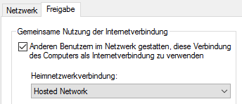

Adhoc Manager
The Adhoc Manager allows you to configure and start your Hosted/Adhoc Network as simple as possible. The need for it comes as there is that Microsoft removed th GUI in newer Windows versions.
Requirements
- Windows XP/Vista/7/10 (32/64 Bit)
- WiFi Adapter
- An upstream connection to share (Dial-Up, Mobile, Ethernet etc.)
Usage
- Start the application as Administrator
- Enter a SSID and password (optional, but recommended)
- Click on Start
- Click on "Manage Connections.." and Right Click on the Connection you want to share. Open
"Properties -> Sharing" and enable the sharing for other users, select "Hosted Network" or
similar as the Home Network Connection.
 - Connect your clients to your WiFi Network
Troubleshooting
- If starting the network fails with a message like "Invalid State", try to disable and re-enable your WiFi Adapter
License
The Adhoc Manager is open-sourced software licensed under the MIT license